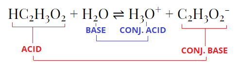
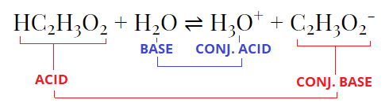

Acids and Bases
Definitions
Bronsted-Lowry Concept of Acids and Bases (1923):
This might be a bit weird at first, as things that you don't normally think are acids (like water) can act like an acid or base depending on the reaction. You'll get used to it soon.
Conjugate Acid Base Pair: 2 species that differ by a proton. (See example below)
- Acid: A proton donater (Gives away H+ ions, or protons)
- Base: A proton acceptor (Takes H+ ions)
This might be a bit weird at first, as things that you don't normally think are acids (like water) can act like an acid or base depending on the reaction. You'll get used to it soon.
Conjugate Acid Base Pair: 2 species that differ by a proton. (See example below)
Example
This is the reaction of acetic acid reacting with water:

As you can see, the acid has a conjugate base (which is the acid minus a H+), and the base (water) has a conjugate acid (which is the base plus a H+)

As you can see, the acid has a conjugate base (which is the acid minus a H+), and the base (water) has a conjugate acid (which is the base plus a H+)
Extra Notes: The H3O+ ion is called the hydronium ion. Sometimes, people write H+
instead of H3O+ in the reaction but it still means the same thing.
Acids and Ionization
Most acids are weak and only a very small part of it ionizes (turns into the conjugate base). For the reaction
HA + H2O ⇌ H3O+ + A-
(Where HA is an acid) you can calculate a Ka value, which is called the acid ionization constant. Don't worry, it's the same as the K you learned about earlier, it just has a special name:Ka = [H3O+][A-] / [HA]
Remember, exclude pure liquids (water) from calculating KSome Examples (Look Carefully)
Write the Ka expression for the following:1) HF + H2O ⇌ H3O+ + F-
Answer:
Ka = [H3O+][F-] / [HF]
2) NH4+ + H2O ⇌ H3O+ + NH3
Answer:
Ka = [H3O+][NH3] / [NH4+]
3) [Al(H2O)6]3+ + H2O ⇌ H3O+ + [Al(H2O)5(OH)]2+
Answer:
Ka = [H3O+][[Al(H2O)5(OH)]2+] / [ [Al(H2O)6]3+]
Properties of Acids and Bases
Acid: Turns blue litmus paper red. Tastes sour, reacts with metals to form hydrogen gas, creates ions in water.
Base: Turns red litmus paper blue. Tastes bitter, slippery feel, creates ions in water.
Base: Turns red litmus paper blue. Tastes bitter, slippery feel, creates ions in water.
Strengths of Acids and Bases
The stronger the acid, the weaker it's conjugate base, and vice versa. Strong acids like HCl have a conjugate base strength of virtually 0
(That's less than the conjugate base strength of water! Remember this for your exam, you will be asked to sort strengths of acids and conjugate bases!)
Strong acids: HCl HBr HI H2SO4 HNO3 HClO4 HClO3*
Weak acids: Literally any other acid.
Strong acids: HCl HBr HI H2SO4 HNO3 HClO4 HClO3*
Weak acids: Literally any other acid.